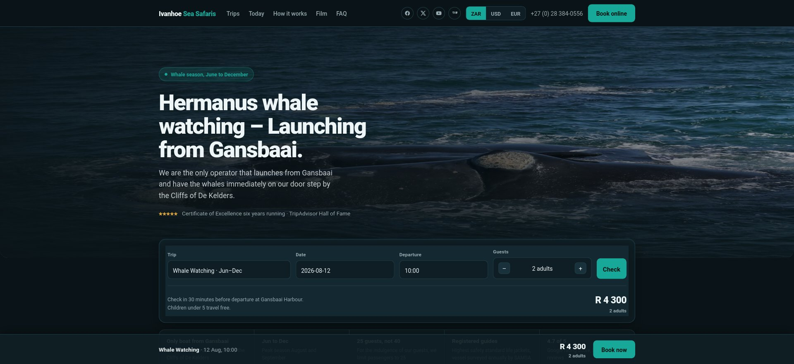

Временная страница для проверки, не привязана к навигации сайта. Скриншот — настоящий кадр макета Ivanhoe.
Статичная картинка в рамке с точками и адресной строкой. Не скроллится и не интерактивна — просто обрамление, чтобы было видно, что это веб-страница.
Оригинал — тяжёлые несжатые фото, видео-фон на JS-слайдере. Собрал booking-макет с акцентом на скорость.

Настоящая, живая страница макета, встроенная как iframe и уменьшенная через CSS-масштаб. Полностью статична для взгляда — прокрутка/клики внутри миниатюры не работают (слишком маленький масштаб для реального взаимодействия), но это настоящая живая страница, а не картинка: если вы обновите макет на GitHub, превью на главной обновится само, без пересъёмки скриншота.
Оригинал — тяжёлые несжатые фото, видео-фон на JS-слайдере. Собрал booking-макет с акцентом на скорость.